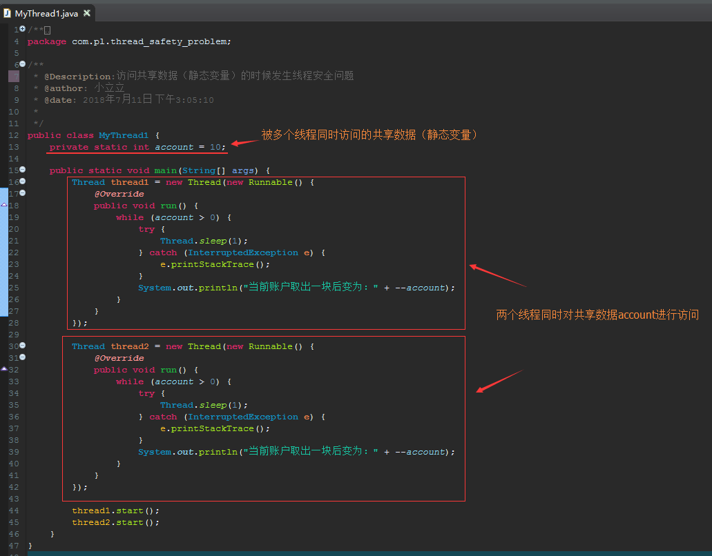

一、什么是线程安全问题
线程安全是多线程编程时的计算机程序代码中的一个概念。在拥有共享数据的多条线程并行执行的程序中，线程安全的代码会通过同步机制保证各个线程都可以正常且正确的执行，不会出现数据污染等意外情况。
二、什么是共享数据
共享数据就是会被多个线程同时访问的数据，共享数据一定是全局变量或者是静态变量，不可能是局部变量
二、并发安全性问题的简单样例
package com.pl.thread;
public class ThreadSafe implements Runnable {
public static void main(String[] args) {
ThreadSafe s1 = new ThreadSafe();
Thread t1 = new Thread(s1, "窗口一");
ThreadSafe s2 = new ThreadSafe();
Thread t2 = new Thread(s2, "窗口二");
t1.start();
t2.start();
}
private static int tickets = 100;//tickets这个变量会被多个线程访问，是共享资源
@Override
public void run() {
while (true) {
try {
Thread.sleep(50);// 暂停50毫秒，只是为了效果更明显
} catch (InterruptedException e) {
}
if (tickets > 0) {
System.out.println(Thread.currentThread().getName() + "正在卖第" + tickets-- + "张票");
} else {
System.out.println("票已售完");
break;
}
}
}
}
上面这个样例中主要是模拟“火车站卖票”的过程，tickets是总共的票数，有两个窗口在卖票（即两个线程），由于没有加上合适的同步，所以会造成并发安全性问题，即有可能会出现两个窗口在卖同一张票的情况。
三、访问共享数据（全局变量）的时候发生线程安全问题
四、访问共享数据（静态变量）的时候发生线程安全问题
